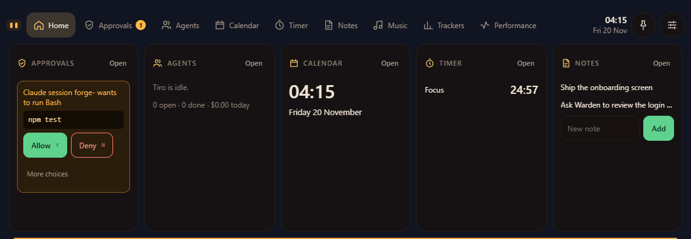
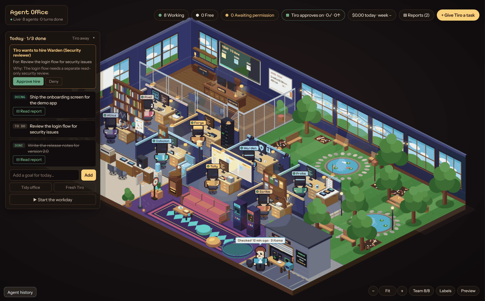
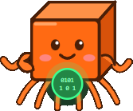
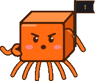
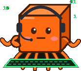
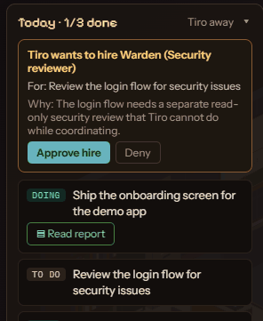
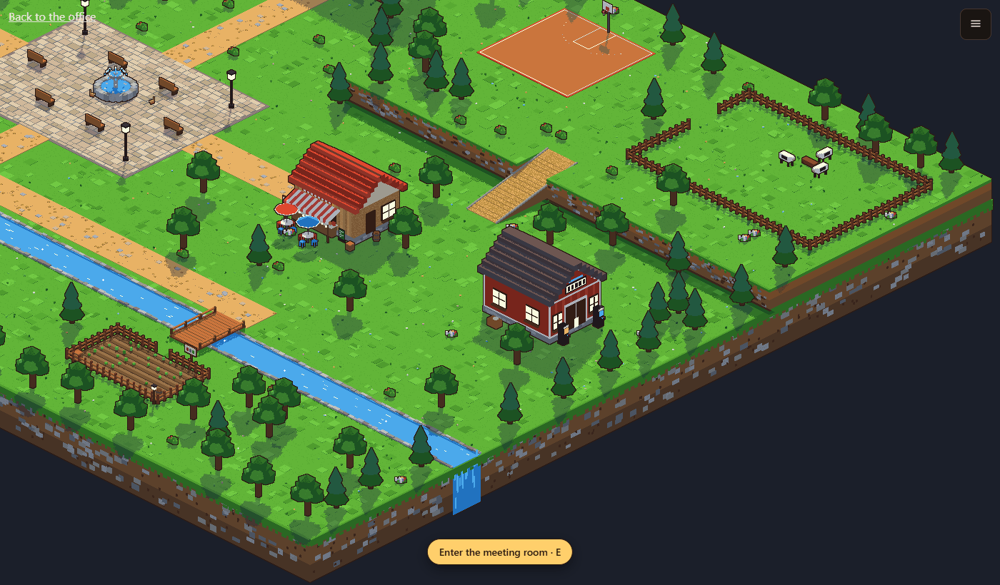
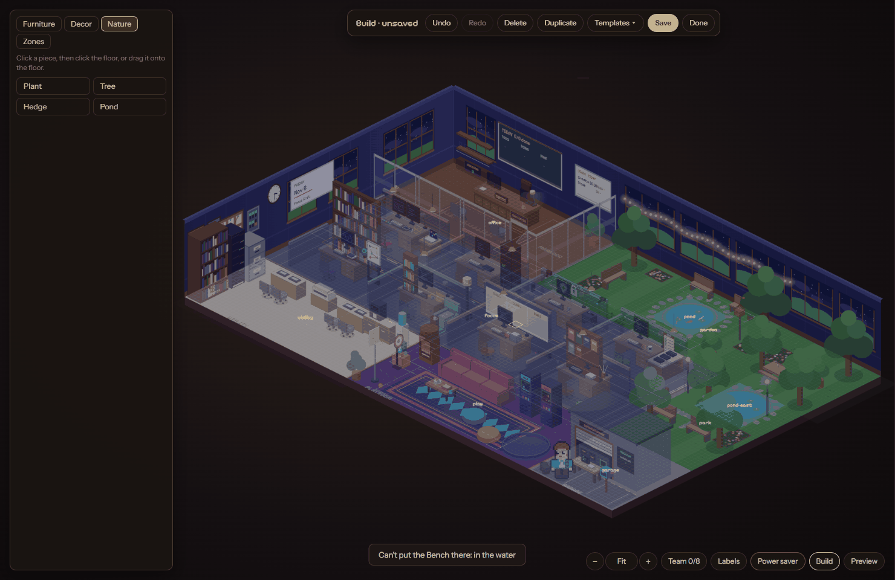
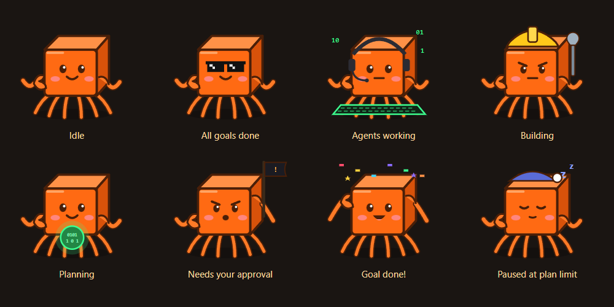

TiroAgents
TiroAgentsThe notch
A notch at the top of your screen with approvals, agents, your calendar, timers, notes and plan trackers. Answer a prompt with Y or N without leaving your work. While you game it shows FPS, GPU and CPU load. The notch

TiroAgents turns your Claude Code into a small pixel office. Tiro, an orange cube-crab, plans each task, asks before it hires a specialist and files what they find. You approve every hire. The office itself spends no tokens.

You stay in charge of the steps that cost money or touch your files.

Type it in the dispatch box. It lands on today's board as a goal.

Tiro names the specialist and why. One approval buys one hire.

Every prompt Claude Code would show you appears in the office and the notch.
Findings are filed as reports. Each agent keeps notes for next time.
It runs on the Claude Code you already have. Your settings, permissions, hooks and MCP servers apply unchanged.
A notch at the top of your screen with approvals, agents, your calendar, timers, notes and plan trackers. Answer a prompt with Y or N without leaving your work. While you game it shows FPS, GPU and CPU load. The notch

A card shows the goal and the reason. It expires after 10 minutes. Approvals

Invite up to three friends. Walk between your offices, play in the game hall and talk by voice in the meeting room. Voice goes app to app; the party server only connects you. Party and meeting room

Colour-coded reports with PDF and Excel export. Notes, memory and SOPs are plain Markdown in your own vault. Reports

Drag furniture, paint zones, save templates.

Hard switches for Tiro, hiring and autopilot, and a plan-limit guard that stops before extra-usage credits. The Guard asks before:
Tiro runs on Sonnet and picks Haiku, Sonnet or Opus for each hire. At most eight specialists work at once. Tiro's mood follows the work.

Place department desks in Build mode to grow the team, or a desk that hands work to Codex, Gemini CLI or OpenCode after the same hire approval. The team
The full model is in the docs, with the permissions page.
No. Drawing the office, the notch and the town costs nothing. Only the agents' own work uses your Claude plan.
Yes. Install it and sign in once. TiroAgents finds it and uses your own plan. The Claude panel shows the steps.
No. Every hire needs your approval, and one approval buys exactly one hire.
The installers aren't code-signed yet. Updates are still verified by the signed release manifest. The download page has the steps.
On your computer, in your user folder and your own Markdown vault.
No cookies and no trackers. A download is counted by region only; see the privacy page.
Free for Windows 10 or later, macOS and Linux. You need Claude Code, signed in.
Also: macOS for Intel · Linux .deb · Check the download